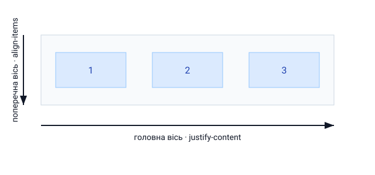

1. Що таке Flexbox
Flexbox — одновимірна система розкладки: вона розподіляє елементи вздовж однієї осі (у рядок або в колонку). Ідеальна для меню, панелей, вирівнювання елементів.

.container {
display: flex; /* діти стають flex-елементами */
}2. Напрямок осі
.container {
display: flex;
flex-direction: row; /* за замовчуванням — у рядок */
/* column — у колонку; row-reverse; column-reverse */
}3. Вирівнювання
justify-content — уздовж головної осі, align-items — уздовж поперечної.
.container {
display: flex;
justify-content: space-between; /* center | flex-start | space-around */
align-items: center; /* stretch | flex-start | flex-end */
gap: 16px; /* відступ між елементами */
}Класичне центрування по обох осях — це просто display:flex; justify-content:center; align-items:center;.
Flexbox назавжди вирішив стару проблему «як відцентрувати div».
4. Гнучкість елементів
.item {
flex-grow: 1; /* займати вільний простір */
flex-shrink: 0; /* не стискатися */
flex-basis: 200px; /* базовий розмір */
}
/* скорочено: grow shrink basis */
.item { flex: 1; } /* рівномірно розтягнутися */5. Перенос і вирівнювання рядків
.container {
display: flex;
flex-wrap: wrap; /* переносити на новий рядок за нестачі місця */
}